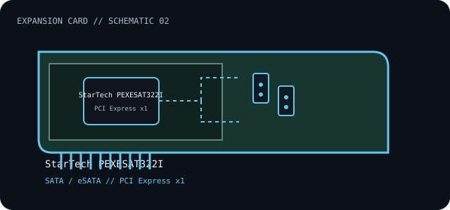

[ INDIVIDUAL COMPONENT // EXPANSION CARDS ]
StarTech PEXESAT322I
Two-port PCI Express SATA 6 Gb/s host controller with configurable internal/external connections. This is a model-specific catalog entry; confirm the exact label and revision before use.

IDENTIFICATION: Match the full model/part number and board revision to the label. Port and bus information below is included only where the linked manufacturer or standards documentation supports it; revisions and platform support may differ.
Specifications and service checks
| Catalog subcategory | Storage and disk controllers |
|---|---|
| Exact model / part identifier | PEXESAT322I |
| Bus / host interface | PCI Express x1 |
| Verified interfaces / protocols | Two SATA 6 Gb/s ports configurable as internal SATA or external eSATA connections; use the manufacturer manual for supported port combinations. |
| OS / driver / firmware caveat | Install the driver package applicable to the host OS before use if the OS does not bind a built-in driver. Boot support depends on motherboard firmware and its option-ROM/boot policy; do not assume hot-swap support outside the documented drive and OS combination. |
| Service note | Check the card label for PEXESAT322I, install the supplied bracket appropriate to the chassis, and do not connect internal and external routes simultaneously unless the manual explicitly allows that configuration. |
Installation and archival notes
- Record the board model, revision, serial/date code, firmware, bracket, accessories, and the documentation revision used to identify the unit.
- Confirm the host slot's electrical wiring/keying, required power, supported OS/driver, and any platform or option-ROM restriction in the cited model documentation.
- Use ESD precautions. Do not infer pinout, compatibility, protocol, boot support, or revision equivalence from a similar connector or product-family name.
Check the card label for PEXESAT322I, install the supplied bracket appropriate to the chassis, and do not connect internal and external routes simultaneously unless the manual explicitly allows that configuration.
Model-specific sources
- StarTech.com — PEXESAT322I product and specificationsExact MPN, PCIe interface, SATA rate, and configurable internal/external ports.
- StarTech.com — PEXESAT322I user manual (PDF)Installation, port selection, drivers, and configuration caveats.
Source links are selected for this exact model or its manufacturer-documented family. Review the source revision and your card's printed identifiers before service.